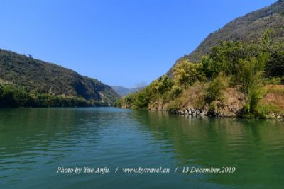
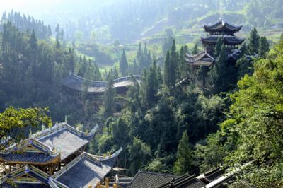
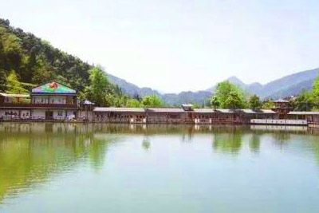

彭水苗族土家族自治县
简称彭水自治县）位于重庆市东南
部，处武陵山区，居乌江下游。
彭水自治县北连石柱县，东北接湖
北省利川市，东连黔江区，东南接酉阳
县，南邻贵州省沿河县、务川县，西南连
贵州省道真县，西连武隆县，西北与丰
都县接壤。截止到2013年，彭水自治县
幅员面积3903平方公里，辖3街道18镇
18乡。2010年第六次全国人口普查，彭
水自治县常住人口为545094人（户籍人
口69万人）。有汉族、苗族、土家族、蒙
古族、侗族等12个民族，是重庆市唯一
以苗族为主的少数民族自治县。 |
|  |
阿依河,发源于贵州省务川县分水乡,向东北蜿蜒而入重庆市彭水县境,经长旗坝、舟子沱、三江口,最后由万足乡长溪滩处注入乌江。全长13公里,其峡深谷高,河床狭窄,礁石遍布,河水清幽而景色绝美,人行其中或泛舟江上有若陶渊明误入桃花源,仿佛身在美妙的天堂,乐而忘返。从舟子沱乘舟而下,沿途可见各种 |
|  |
蚩尤九黎城位于乌江左岸，地处新老城区连接带，堪称中国第一苗王城。采用两轴、两区、九星布局，主要建筑包括四城门、椎牛场、百苗文化长廊、九黎部落、北斗七星亭、魁星楼、神问台、蚩尤苗、九黎宫、苗王府、点将台、将军柱等，集千余工匠毕生智慧于一城。合鼓宴，傩舞绝技独具一格。 |
|  |
泉水渔都景区位于太原镇区阳村2组，占地面积150亩。景区是集观光、采摘、住宿、游玩于一体的综合性旅游景点。走进景区，流水养殖观光水面、大水面养殖垂钓区域等主要景点和岸边的民宿、观光长廊等配套景点交相辉映，形成一幅美丽的画卷。据景区负责人刘正贵介绍，为了让景区功能更加完善，近年来，景区不断投入资金完善配套旅游基础设施建设，截止2019年底，累计投入5000万元用于景区开发建设。目前，景区完善了游客接待中心公 |
|